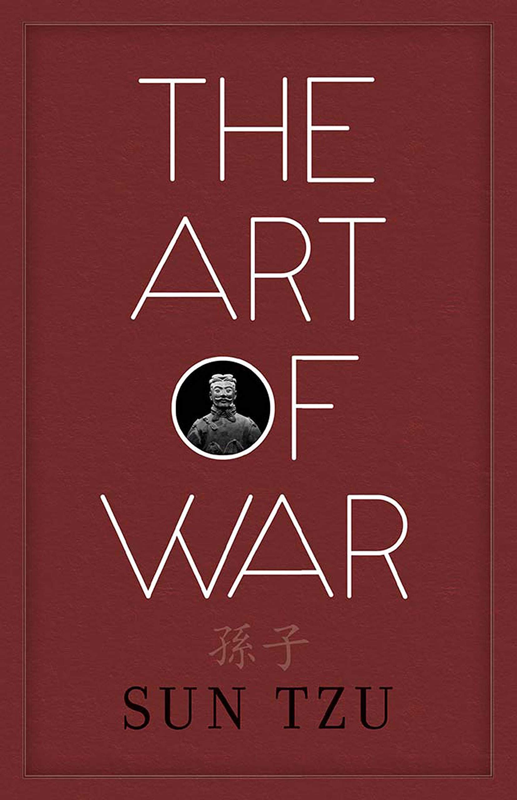

Books

I like reading books every now and then. I did not like reading fiction books at all before. But now it seems I like I've gotten into a better habit regarding reading. I've now come across so good books that taught me a lot. I usually don't buy books just for the hell of it, I borrow books from friends and libraries. If I buy a book its usually after I've read it and it is really good at which point I decide I need to have it. Be that as it may I take good care of books either the ones I own or the ones I borrow. I don't enjoy reading fictions from a digital device at all. I suppose I feel like it takes someting away from the expereince. I enjoy reading non-fictional books too as long as they have an exciting aspect to them. My all time favourite book is The Art of War by Sun Tzu.



FOLLOW ME ON TWITTER